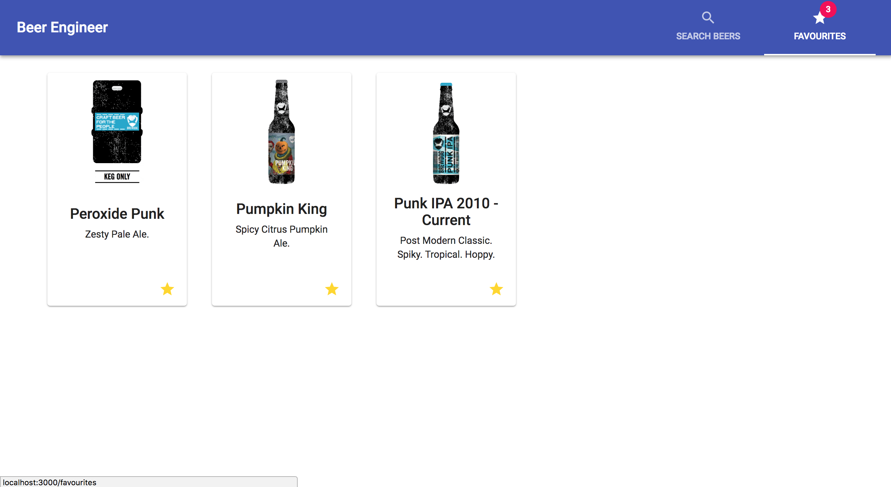
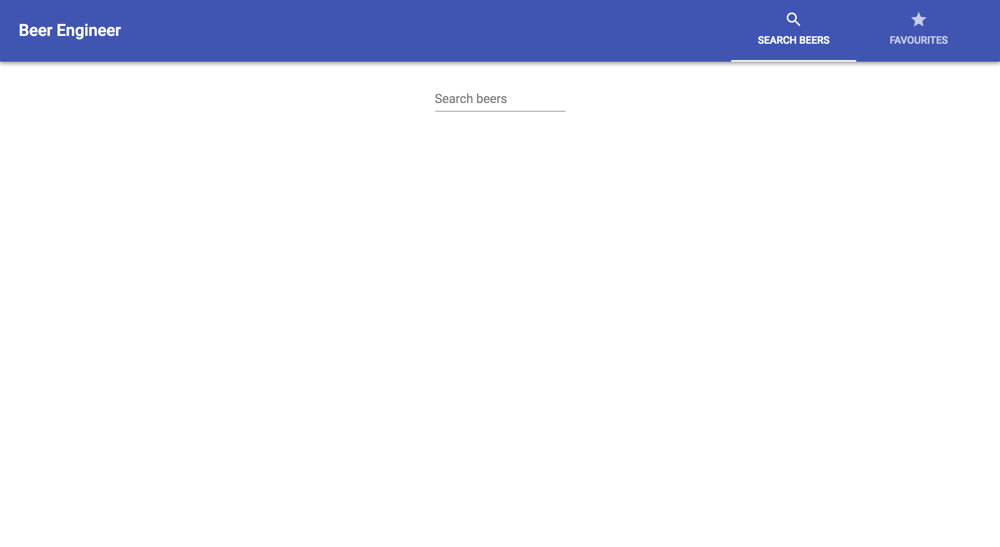
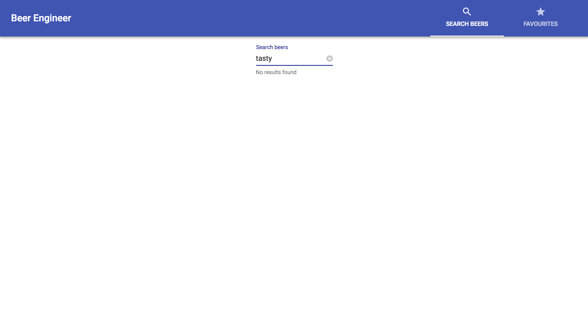
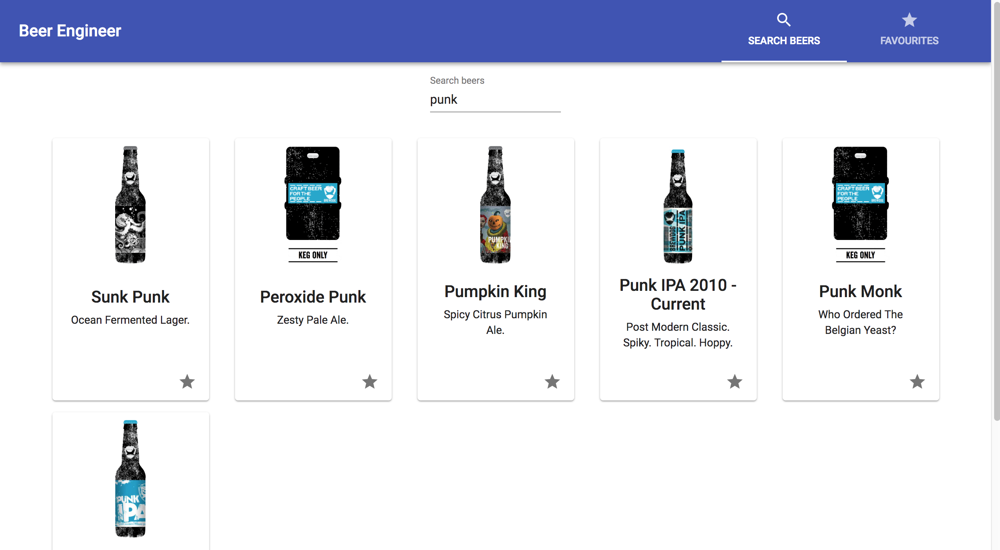
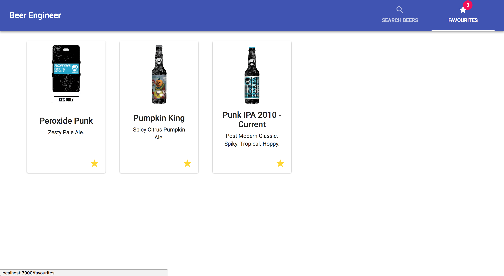

<div id="ajax-page" class="ajax-page-content">
    <div class="ajax-page-wrapper">
        <div class="ajax-page-nav">
            <div class="nav-item ajax-page-prev-next">
                <a class="ajax-page-load" href="portfolio-4.html">
                    <i class="zmdi zmdi-chevron-left"></i>
                </a>
            </div>
            <div class="nav-item ajax-page-close-button">
                <a id="ajax-page-close-button" href="#">
                    <i class="zmdi zmdi-close"></i>
                </a>
            </div>
        </div>

        <div class="ajax-page-title">
            <h1>Beer Engineer in React/Redux/Material UI</h1>
        </div>

        <div class="row">
            <div class="col-sm-7 col-md-7 portfolio-block">
                <div class="owl-carousel portfolio-page-carousel">
                    <div class="item">
                        
                    </div>
                    <div class="item">
                        
                    </div>
                    <div class="item">
                        
                    </div>
                    <div class="item">
                        
                    </div>
                    <div class="item">
                        
                    </div>
                </div>

                <!--
                <div class="portfolio-page-image">
                    
                </div>
                -->

                <script type="text/javascript">
                    jQuery(document).ready(function ($) {

                        $('.portfolio-page-carousel').owlCarousel({
                            smartSpeed: 1200,
                            items: 1,
                            loop: true,
                            dots: true,
                            nav: true,
                            navText: false,
                            margin: 10
                        });

                    });
                </script>
            </div>

            <div class="col-sm-5 col-md-5 portfolio-block">
                <!-- Project Description -->
                <div class="block-title">
                    <h3>Description</h3>
                </div>
                <ul class="project-general-info">
                    <li>
                        <p>
                            <i class="fa fa-globe"></i>
                            <a href="http://martinbryant.dev/beer-engineer" target="_blank">Beer Engineer in
                                React/Redux/Material UI</a>
                        </p>
                    </li>
                    <li>
                        <p>
                            <i class="fa fa-github"></i>
                            <a href="https://github.com/martinbryant/beer_engineer" target="_blank">Github Repo</a>
                        </p>
                    </li>
                    <li>
                        <p>
                            <i class="fa fa-calendar"></i> 8 August 2018
                        </p>
                    </li>
                </ul>
                <h3>Project Brief</h3>
                <p class="text-justify">Inspired by
                    <a href="https://medium.com/@GarrettLevine/5-projects-to-complete-when-starting-to-learn-front-end-web-development-48e8a1ce3178#3476"
                        target="_blank">5 Projects To Complete When Starting to Learn Front-End Web Development</a>
                </p>
                <p class="text-justify">I would recommend creating a similar app to giphy in layout, but one which
                    allows you to have a ‘shopping
                    cart’ or ‘favourite’ functionality. You should then be able to see a separate list of the items you
                    favourited.
                    This will of course not be saved to any database, but will bring a new set of challenges with
                    managing
                    application state.</p>

                <p class="text-justify">I would recommend diving into a front-end framework to expand your ability and
                    general understanding over
                    modern web development. Because I work heavily with Facebook’s React I would recommend starting
                    that,
                    and using react create app to get started.</p>

                <p class="text-justify">This might seem like a giant leap at first, but focus on building this web app
                    piece by piece. Create the
                    app in the following order; </p>
                <ul>
                    <li>Template data on the page from a generic API request Add a search bar, which makes a separate
                        query to
                        a database on request</li>
                    <li>Add favourite functionality which allows you to favourite a card </li>
                    <li>Create a separate route (using react router) which allows you to see all the beers you’ve
                        favourited
                        in the session.</li>
                </ul>

                <h3>Challenges</h3>
                <ul>
                    <li>Using and customising React Material UI for the layout</li>
                    <li>Incorporating React Router and Material UI tabs for page navigation</li>
                    <li>Design decisions on storing data to be retreived from local storage</li>

                </ul>
                <h3>Takeaways</h3>
                <ul>
                    <li>I have learnt an alternative way to apply styles to components</li>
                    <li>I feel confident to use React Router in the future</li>
                    <li>Spent some time researching Redux messaging patterns for project scaling</li>
                </ul>
                <!-- /Project Description -->

                <!-- Technology -->
                <div class="tags-block">
                    <div class="block-title">
                        <h3>Technology</h3>
                    </div>
                    <ul class="tags">
                        <li>
                            <a>React</a>
                        </li>
                        <li>
                            <a>Redux</a>
                        </li>
                        <li>
                            <a>Material UI</a>
                        </li>
                        <li>
                            <a>Jest</a>
                        </li>
                        <li>
                            <a>CSS</a>
                        </li>
                    </ul>
                </div>
                <!-- /Technology -->
            </div>
        </div>
    </div>
</div>